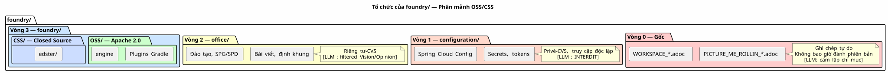

Phân rã OSS/CSS — Tại sao Tôi đã chia `foundry/` làm hai
Đăng ngày 03 May 2026
foundry/— vùng chức năng chứa mã nguồn của workspace của tôi — chứa 18 dự án. Tám dự án là mã nguồn mở theo Apache 2.0. Chỉ một dự án là mã nguồn đóng — SaaS Edster. Trong nhiều tháng, chín dự án này đã cùng tồn tại trong cùng một thư mục, chỉ được phân tách bởi… không có gì. Trạng thái công khai/riêng tư của chúng là một thông tin trong đầu tôi, không phải trong hệ thống tệp tin.
Và rồi tôi muốn kết nối một RAG. Và chính lúc đó, mọi thứ sụp đổ.
Tai nạn Đã Được Dự báo Trước
Vào tháng 4 năm 2026, tôi đã bắt đầu triển khai RAG pgvector cho slider-gradle. Nguyên tắc là: lập chỉ mục tất cả các kho lưu trữ của`foundry/`, tạo ra các embeddings, và đưa chúng vào ngữ cảnh của LLM để nó có một perception" về hồ sơ`foundry/`Vui lòng cung cấp văn bản cần dịch.
Pipeline này rất đơn giản:
val repos = fileTree(rootDir) {
include("**/*.adoc", "**/*.kts", "**/*.kt", "**/*.json", "**/*.yml")
}
val chunks = repos.map { chunk(it) }
val embeddings = chunks.map { embed(it) }
pgvector.insert(embeddings)Đơn giản. Hiệu quả. Vànguy hiểmVui lòng cung cấp văn bản cần dịch.
Bởi vì điều này`fileTree`không phân biệt giữa`plantuml-gradle/` (Apache 2.0, công khai) và`edster/`(mã nguồn đóng, riêng tư). Nó nuốt chửng tất cả. Và nếu một ngày tôi công bố các embeddings này — trên một dashboard, trong một câu trả lời LLM, trong một tập dữ liệu huấn luyện — mã nguồn độc quyền của Edster bị rò rỉ.
|
Vấn đề không phải là việc một LLM đọc mã nguồn đóng. Vấn đề là, là là mã này kết thúc trong một embedding vector công khai — không thể đảo ngược, không thể xóa, không thể kiểm tra. |
Câu Hỏi Thực Sự
Đây không phải là "làm thế nào để ngăn LLM làm rò rỉ mã nguồn?". Mà là "làm thế nào làm cho việc rò rỉ trở nên bất khả thi về mặt cấu trúc?
Câu trả lời không phải là một prompt. Câu trả lời chính là chia hồ sơ làm hai.
Giải pháp: OSS/ và CSS/
Trước:
foundry/
├── plantuml-gradle/ ← public
├── bakery-gradle/ ← public
├── magic-stick/ ← public
├── edster/ ← PRIVÉ
├── slider-gradle/ ← public
└── ... ← mélange invisibleSau:
foundry/
├── OSS/ ← tout est Apache 2.0
│ ├── plantuml-gradle/
│ ├── bakery-gradle/
│ ├── magic-stick/
│ ├── slider-gradle/
│ └── ...
└── CSS/ ← tout est closed source / private
└── edster/Le `fileTree`trở thành :
val ossRepos = fileTree(File(rootDir, "OSS")) {
include("**/*.adoc", "**/*.kts", "**/*.kt", "**/*.json", "**/*.yml")
}
val cssRepos = fileTree(File(rootDir, "CSS")) {
include("**/*.adoc", "**/*.kts", "**/*.kt", "**/*.json", "**/*.yml")
}
// Embeddings publics — OSS seulement
pgvectorPublic.insert(ossRepos.map { chunk(it) }.map { embed(it) })
// Dataset fine-tuning privé — CSS seulement
fineTuningDataset.insert(cssRepos.map { chunk(it) }) // jamais publié|
RAG công khai không bao giờ nhìn thấy`CSS/`. Mã nguồn đóng cung cấp dữ liệu cho một dataset không được tinh chỉnh (fine-tuning) — một mô hình nội bộ không bao giờ rời khỏi nhà tôi. La sự phân tách là mang tính cơ học, không phải mang tính khai báo. |
Tại sao là "OSS" và "CSS" chứ không phải "Public" và "Private
Việc lựa chọn các từ viết tắt OSS (Open Source Software) và CSS (Closed Source Software) là cố ý:
-
Public"/"Private" mô tảkhả năng hiển thị(điều mà GitHub nhìn thấy)
-
OSS"/"CSS" mô tảtự nhiênmã nguồn (điều mà LLM cần biết)
Khả năng hiển thị GitHub là một siêu dữ liệu của repo từ xa. Bản chất của mã nguồn là một thuộc tính của nội dung. LLM không có quyền truy cập vào API GitHub — nhưng nó có quyền truy cập vào hệ thống tệp.`CSS/`nói với anh ấy "cẩn thận, mã này không có giấy phép miễn phí" mà không cần đọc một`LICENSE`hoặc phân tích cú pháp một`package.json`Vui lòng cung cấp văn bản tiếng Pháp cần dịch.
|
Tên thư mục là siêu dữ liệu mạnh mẽ nhất mà bạn có thể cung cấp cho một LLM. Nó không thể bị phân tích cú pháp sai, bị bỏ qua, hoặc bị hiểu sai. LLM thấy`CSS/edster/`trong đường dẫn tệp — nó biết. |
Cây Hoàn Chỉnh — Bốn Vùng, Không Phải Ba
Việc phân tách chi tiết OSS/CSS hoàn thiện ontology ba vùng. Vùng `foundry/`chuyển từ 1 sang 2 phân vùng chức năng:

| Khu vực | GDPR | Indexation RAG công khai | Dataset fine-tuning | | Racine | Cấp độ 0 — Thân mật | ✗ | ✗ | |configuration/| Cấp độ 1 — Hạn chế | ✗ | ✗ | |office/| Cấp độ 2 — Cộng tác | ✓ Đã lọc | ✓ Đã lọc | |foundry/private/| Cấp độ 3 — Mở có điều kiện | ✗ | ✓ Riêng tư | |foundry/public/| Cấp độ 4 — Người bản xứ | ✓ Tự do | ✓ Công khai |
Trường hợp Đặc biệt: cheroliv.com
Trong lúc tiện tay, tôi đã sửa một điểm mâu thuẫn khác. Trang web của tôi cheroliv.com`sống ở`foundry/`như một dự án phần mềm độc lập — với build Gradle riêng, CI riêng, và… riêng quản trị.agents/`Vui lòng cung cấp văn bản cần dịch.
Nhưng các bài viết trên blog không phải là mã code. Đó là dữ liệu biên tập của Cercle 2 — tương tự như các khung hình của`office/pilotage/` hoặc các khóa đào tạo về`office/formations/`Vui lòng cung cấp văn bản cần dịch.
AVANT APRÈS
foundry/ office/
cheroliv.com/ sites/
site/jbake/content/blog/ cheroliv.com/
2026/0117_....adoc 2026/0117_....adocNhững thay đổi:
-
Các bài viết nằm trong`office/`→ quyền riêng tư của Cercle 2
-
Nhiệm vụ`publishSite`trở thành một capability của`engine`
thông qua`bakery-gradle`— plugin nhận được một`FileTree`, anh ấy không biết rằng các bài viết đến từ`office/`
-
Một CI duy nhất, một quản trị duy nhất — không trùng lặp
-
Bộ phân loại Vision/Opinion (Quy tắc 2bis) được áp dụng tự động:
các bài viết trong`office/`được lọc trước khi xuất bản
bakery-gradle S’En Fiche
Và đó chính là điều tuyệt vời. Plugin`bakery-gradle`không bị thay đổi. Nó nhận một thư mục nội dung AsciiDoc, tạo ra HTML, rồi push trên GitHub Pages. Cho dù thư mục này được gọi là`site/jbake/content/` ou office/sites/cheroliv/— plugin không quan tâm.
// engine/build.gradle.kts
task("publishBlog") {
doLast {
val articles = fileTree("../../office/sites/cheroliv/2026/")
bakery.generate(articles) // ← bakery ne sait pas d'où ça vient
}
}Hợp đồng giao diện là một tác vụ Gradle. Không phải là một REST API. Không phải là một webhook. Một tác vụ — được định kiểu, có thể kiểm thử, có thể thực thi cục bộ và trong CI.
Tác động đến Quản trị Agent
Việc phân tách OSS/CSS thay đổi quản trị agent trên ba điểm:
-
RAG công khai: phạm vi lập chỉ mục thay đổi từ`foundry/**`
à foundry/public/+office/Vision/. Mã nguồn đóng (closed source) bị loại khỏi chỉ mục do cấu hình tác vụ, không phải do prompt.
-
Knowledge Graph : graphify-gradle tạo ra hai đồ thị:
Vui lòng cung cấp văn bản cần dịch.office/graph.json(công khai) — quan hệ giữa các artéfacts OSS + office/Vision Hãy cung cấp văn bản cần dịch.configuration/graph_private.json(gitignored, riêng tư) — quan hệ giữa các artéfacts CSS, chưa từng được xuất bản
-
Tinh chỉnh tập dữ liệu (Dataset fine-tuning) :`codebase-gradle`giờ đây có hai nguồn:
*OSS/→ các bộ dữ liệu công khai (mô hình cộng đồng, benchmarks) Vì bạn không cung cấp văn bản cần dịch, vui lòng gửi nội dung tiếng Pháp mà bạn muốn chuyển sang tiếng Việt. Tôi sẽ tuân thủ chính xác các yêu cầu về định dạng của bạn.CSS/→ các tập dữ liệu riêng tư (mô hình nội bộ, fine-tuning độc quyền)
Những gì ta đạt được (Và Những gì ta mất đi)
Trước (hồ sơ phẳng) |
Sau (OSS/CSS + office/sites) |
|
|
RAG lập chỉ mục mọi thứ mà không phân biệt |
Chỉ mục RAG`OSS/`+`office/Vision`duy nhất |
Không thể biết được liệu một dự án có phải là mã nguồn mở hay không |
Đường dẫn`OSS/` ou `CSS/`nói điều đó |
cheroliv.com có CI riêng, có hệ quản trị riêng |
CI và quản trị được dùng chung trong `engine |
Các bài viết trên blog nằm trong một kho lưu trữ "code |
Các bài viết blog nằm trong`office/sites/`— dữ liệu, không phải mã |
Rủi ro rò rỉ mã nguồn closed source trong các embeddings công khai |
Không thể thực hiện về mặt cấu trúc —`CSS/`ngoài phạm vi RAG |
Chi phí duy nhất: một`git mv`tổng thể cho 17 kho lưu trữ OSS + một đợt refactor của build.gradle.kts de engine. Đây là một cuộc di chuyển lạnh — không có dữ liệu đang truyền tải, không có người dùng bị ảnh hưởng.
Kết luận: Tín hiệu Vật lý đánh bại Tín hiệu Phần mềm
Điều tôi đã làm chiều nay là thay thế một quy ước ngầm bởi một sự phân tách rõ rệt trong khu vực`foundry/`. Trước đây, bạn phải biết rằng`edster/`từng là mã nguồn đóng. Giờ đây, bạn thấy đấy — thư mục có tên là`CSS/`Vui lòng cung cấp văn bản tiếng Pháp cần dịch.
Nó cùng nguyên lý với các quyền hạn Unix, các VLAN mạng, hoặc các các khoang ngăn cháy trong một cơ sở dữ liệu. Bảo mật không được phép là một thông tin mà bạn cần ghi nhớ. Nó phải là một thuộc tính vật lýcủa hệ thống.
Việc chia nhỏ OSS/CSS là sự vận dụng nguyên lý này vào lĩnh vực của quản trị LLM. LLM không cần biết rằng Edster là bí mật. Nó cần phải không thể lập chỉ mục được.
Và đó chính xác là những gì`CSS/`đảm bảo.